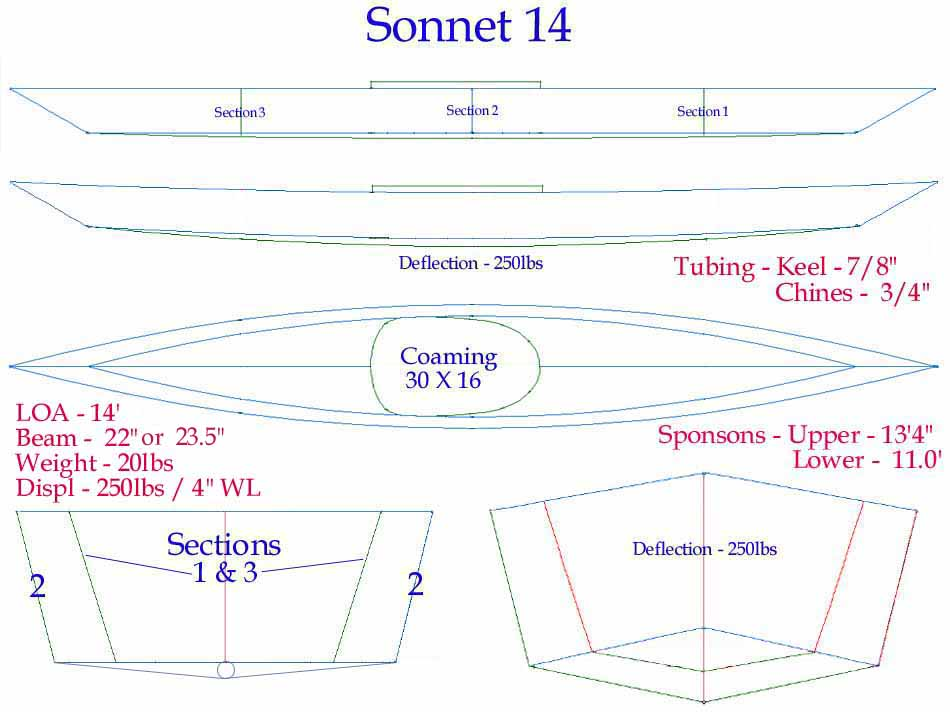

| Sonnet 14 ( page 4 of 6) | Menu Last Page Next Page |
|

The Sonnet 14 is designed to use a pair of 13.5' Folbot "Kodiak" top sponsons and a pair of 11' Folbot "Aleut" bottom sponsons. In addition, there are only 3 strongback stations / sections vs 6 used on the Sonnet 16. Though small, the Sonnet 14 is designed with a displacement of 225lbs. for the 22" version and 250lbs for the 23.5" version. More sponson details can be seen on the next page.
|
|